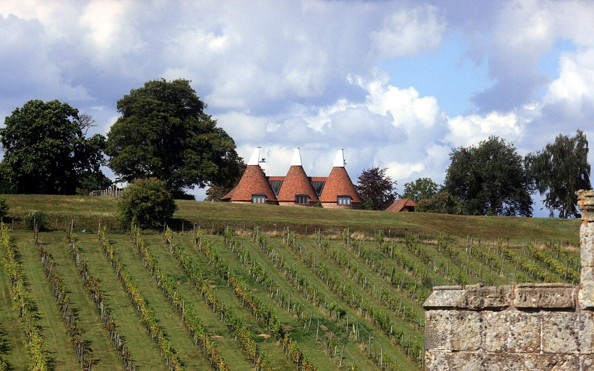

EFFERVESCENT
Accueil › Angleterre › Sussex
Appellation d’origine protégée (PDO)Sussex
Le Sussex, sur la côte sud de l’Angleterre, est l’un des berceaux de l’effervescent anglais de méthode traditionnelle. Ses vignes se répartissent entre les collines crayeuses des South Downs et les sols d’argile et de grès du Weald.

Histoire
L’ancien comté de Sussex, aujourd’hui divisé entre West Sussex et East Sussex, occupe une place centrale dans l’histoire récente du vin anglais. S’il existait déjà de petits vignobles dans la région dans les années 1960 et 1970, le grand changement est survenu à la fin des années 1980, lorsque Nyetimber planta dans le West Sussex du chardonnay, du pinot noir et du pinot meunier afin d’élaborer des effervescents dans le style de la Champagne. Peu après, dans les années 1990, Ridgeview s’installa dans l’East Sussex, près de Ditchling, dans le même but. La reconnaissance obtenue par leurs vins a encouragé de nombreux autres producteurs et, au cours des dernières décennies, de nombreux domaines ont vu le jour dans le comté, certains de grande taille, comme Rathfinny, près d’Alfriston, ou Wiston, au pied des South Downs.
Le Sussex fut en outre la première zone anglaise à obtenir sa propre appellation d’origine, qui permet aux vins respectant ses règles d’indiquer Sussex sur l’étiquette.
Climat
Le climat est océanique et frais, avec une longue saison de végétation. La proximité de la Manche adoucit les températures et réduit le risque de gel dans les zones côtières, même si les gelées de printemps restent un danger dans les vallées intérieures. Le Sussex compte parmi les régions les plus ensoleillées du Royaume-Uni, mais les raisins mûrissent lentement et conservent une acidité élevée, idéale pour l’élaboration d’effervescents. La variabilité entre millésimes est importante.
Sols
Le comté présente deux grands types de terrain. Au sud, la chaîne des South Downs est constituée de craie, la même roche calcaire qui affleure en Champagne, et ses pentes exposées au sud offrent des sols minces et bien drainés. Au nord s’étend le Weald, aux sols d’argile, de sable et de grès, dont des formations de grès vert. Les deux types de sol donnent des vins de qualité : en général, la craie est associée à des vins tendus à l’acidité marquée, tandis que les argiles et les sables apportent parfois davantage de corps et de fruit.
Cépages et styles
Le style dominant est l’effervescent de méthode traditionnelle, élaboré à partir de chardonnay, de pinot noir et de pinot meunier, avec seconde fermentation et élevage sur lies en bouteille. On produit des cuvées non millésimées, des vins millésimés, des blancs de blancs, des blancs de noirs et des rosés. Certaines caves élaborent aussi des vins tranquilles de chardonnay, de pinot noir et de bacchus. L’appellation Sussex fixe des règles pour les effervescents, qui doivent être élaborés selon la méthode traditionnelle avec une durée minimale d’élevage sur lies, ainsi que pour les vins tranquilles.
Vins · Sussex
EFFERVESCENT
Nyetimber Classic Cuvée
Voir la fiche et où acheter ↗EFFERVESCENT
Nyetimber Rosé
Voir la fiche et où acheter ↗EFFERVESCENT